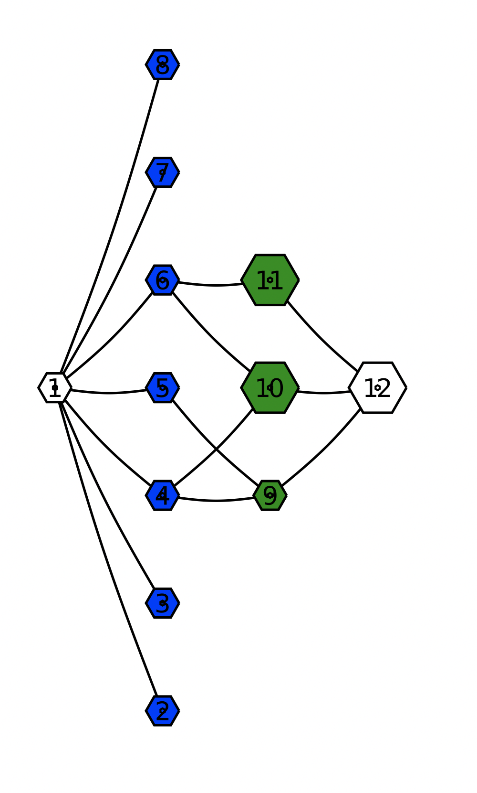

~ / blog / Advent of Code 2020 Retrospective
It is Christmas night, and it is the first time this month that I haven’t had to plan my schedule for the evening around a programming puzzle contest. For the last 25 days this month, I participated in Advent of Code 2020, and I managed to collect all 50 stars!

I solved all the puzzles in the Julia programming language, and my solutions are available here.
In this post, I wanted to share why I think you should do Advent of Code and idiomatic solutions to all 25 days in the Julia programming language.
# Why Advent of Code
Advent of Code is a lot of fun. I think there’s a few reasons I find it quite enjoyable.
Firstly, there’s the competitive aspect of it.
A single puzzle unlocks every night at midnight Eastern Time, and the time when you submit a solution is recorded. There’s a global leaderboard that highlights the top 100 fastest times but you also have the ability to make a private leaderboard that you can share with anyone you like, and you can use that to track your time and challenge your friends or peers.
For straightforward puzzles, it is a lot of fun to see who can read, grok and type out a bug-free working program the fastest. A bunch of people also upload recordings of their attempts, and it is humbling to see how fast they can whip out a correct solution to a problem.
Secondly, unlike most other competitive programming challenges, the puzzles are mainly designed to be a teaching / learning experience.
Every puzzle has two parts, where the first part introduces a prompt, and requires you to solve it before viewing the second part. The first part tends to set up an idea or check that you are on the right track, and the second part tends to extend the idea or subvert an obvious decision you made in the first part.
Almost all the problems require parsing text input of various formats. In some of the latter puzzles, the puzzle inputs may be designed to hedge against certain naive solutions. Some puzzle inputs will only work with certain data structures or certain algorithms. There are a lot of “ah ha” moments when you figure what you should use and when, which makes for a very satisfying solve.
Most problems are based on standard computer science programming concepts, but are never presented as such. Some problems have a mathematics tilt to it, which can make finding those solutions quite rewarding. But also, every problem is designed such that even if you don’t know the “theory” behind it you’ll be able to stumble your way into solving it if you persevere. Reading other people’s one liners after you hacked it together is quite enlightening.
And since various programming language communities discuss their solutions in dedicated forums, there tends to be a lot of discussion about the tips and tricks you can use in your favourite programming language to express the problem more elegantly. Even after having used Python and Julia for years now, I still learn new things when I read other people’s solutions.
And finally, that brings me to the community.
The /r/adventofcode subreddit and the Julia Zulip and Slack channel have been a joy to visit every day after solving the puzzles. I’ve particularly enjoyed seeing all the neat visualizations that come out of Advent of Code by the community.
That’s the really neat thing about Advent of Code. The problems are short enough to be solved in less than an hour, the solutions are small enough to be written in just one file, puzzles tend to tackle just one concept or idea, and there is a large enough community around it. Consequently, a lot of people tend to share their solutions, and you get to see a lot of discussion around each puzzle, including a number of different ways to approach the same problem.
If you’ve never heard of Advent of Code, I highly recommend you try it out. Below I’ll be discussing solutions in Julia that were shared on Zulip, Slack and Reddit. This will contain spoilers for all days in Advent of Code 2020.
# Solutions
- Report Repair
- Password Philosophy
- Toboggan Trajectory
- Passport Processing
- Binary Boarding
- Custom Customs
- Handy Haversacks
- Handheld Halting
- Encoding Error
- Adapter Array
- Seating System
- Rain Risk
- Shuttle Search
- Docking Data
- Rambunctious Recitation
- Ticket Translation
- Conway Cubes
- Operation Order
- Monster Messages
- Jurassic Jigsaw
- Allergen Assessment
- Crab Combat
- Crab Cups
- Lobby Layout
- Combo Breaker
# Day 1: Report Repair
Day 1 of advent of code is basically intended to check that you have a programming language installed, and you know how to use simple features it in (e.g. for loops).
You can solve the first day with just multiple for loops. However, a more idiomatic solution can be expressed using the combinations function from the Combinatorics.jlPython has a similar function in the standard library: https://docs.python.org/3/library/itertools.html#itertools.combinations:
using Combinatorics
readInput() = sort(parse.(Int, split(strip(read(joinpath(@__DIR__, "./input.txt"), String)))))
expense_report(data, n) = only(prod(items) for items in combinations(data, n) if sum(items) == 2020)
part1(data = readInput()) = expense_report(data, 2)
part2(data = readInput()) = expense_report(data, 3)In Julia, small functions are usually made into their single line form. Here’s how you would write it if you would like to do it in the multi-line form.
Functions also implicitly return the last expression evaluated as part of the function body, if an explicit return is not present.
# Day 2: Password Philosophy
Day 2 is a simple case of parsing, counting characters in a string and knowing that “exactly one” can be expressed using the xor operation.
The solution below is based on Sukera’s.
readInput() = split(strip(read(joinpath(@__DIR__, "./input.txt"), String)), '\n')
function parseInput(data)
d = split.(data, ": ")
map(d) do (policy,password)
rule, letter = split(policy, ' ')
low, high = parse.(Int, split(rule, '-'))
(low, high, only(letter), strip(password))
end
end
function part1(data = readInput())
count(parseInput(data)) do (low, high, letter, password)
low <= count(==(letter), password) <= high
end
end
function part2(data = readInput())
count(parseInput(data)) do (low, high, letter, password)
(password[low] == letter) ⊻ (password[high] == letter)
end
endJulia supports an infix operator for xor: ⊻.
If a function f takes another function as the first argument, you can use the f(c) do ... end block syntax to map over every element in the collection c and apply the anonymous function defined by the do ... end block, the result of which is processed by the function f.
For example, if you would like to do the following:
you can express it like so instead:
Alternatively, you can pass in an anonymous function as the first argument by using the thin arrow ->:
In Julia, you can use the only function to get the one and only element in a collection.
# Day 3: Toboggan Trajectory
A lot of advent of code problems have the puzzle input as text that represents a grid. Day 3 is our first introduction to a grid of trees.
Having a one liner to convert the text input to a Matrix can be very useful.
Here’s what the input for this particular day looks like:
julia> A = readInput();
julia> typeof(A)
Matrix{Char} (alias for Array{Char, 2})
julia> size(A)
(323, 31)
julia> xy = findall(==('#'), A);
julia> using SparseArrays; sparse([p.I[1] for p in xy], [p.I[2] for p in xy], [1 for _ in xy])
323×31 SparseMatrixCSC{Int64, Int64} with 2611 stored entries:
⠟⣿⡿⡯⣮⣿⡇
⡗⣿⣿⢿⢝⣽⡇
⡞⡾⣟⢏⣭⢯⡂
⣷⣿⣿⢽⣟⣻⠇
⢺⣯⣗⠽⣟⣿⡂
⡬⡻⡯⡿⣯⣵⡇
⠾⣟⣿⡺⣽⣫⠅
⣿⡿⡏⣯⡈⣻⠅
⢫⢯⣿⣻⡻⡏⡁
⠭⡟⣻⡿⢽⣿⠇
⣝⣽⣷⡑⣟⢽⠇
⢗⣛⣱⣝⠯⡟⡇
⣌⣷⡛⢯⣿⡗⠇
⢷⠿⡍⢶⡯⣟⡅
⡝⣿⡻⣿⣿⢿⡂
⢜⠽⢯⣿⣻⣇⠁
⠹⢿⢻⡯⡟⡛⡅
⣷⣮⣽⣿⡿⡻⡃
⣻⡯⣞⣷⣿⡏⠆
⣮⡗⣟⢫⣵⣿⡆
⣌⣶⣾⣢⣿⣷⡅
⣜⡷⡿⠷⣿⣛⡁
⣶⣽⣮⣾⣏⡋⡅
⣭⣽⣃⣧⣾⣳⡃
⣟⣿⡿⣯⣿⡽⡀
⣼⣪⣗⣯⡖⡿⡃
⣯⢿⡹⣻⣯⣇⡇
⣵⣟⡝⢾⢽⣳⠅
⡿⣯⡿⣻⣿⣿⡃
⣇⣿⣟⣶⣿⣦⡇
⡺⣝⣷⣎⢟⣛⡅
⣻⢏⣯⣟⣎⣓⡅
⡕⣿⣿⣵⣕⢽⡇
⡿⣟⣿⣮⣯⣷⡃
⣟⡃⣇⡻⣿⣯⡇
⣠⣧⣾⣟⣞⢿⠀This solution is based on Henrique Ferrolho’s solution.
function solve(trees, slope)
n = cld(size(trees, 1), slope.y)
rs = range(1, step=slope.y, length=n)
cs = range(1, step=slope.x, length=n)
cs = map(c -> mod1(c, size(trees, 2)), cs)
idxs = CartesianIndex.(rs, cs)
count(==('#'), trees[idxs])
end
part1(data = readInput()) = solve(data, (x = 3, y = 1))
part2(data = readInput()) = prod(solve.(Ref(data), [(x=1,y=1),(x=5,y=1),(x=3,y=1),(x=7,y=1),(x=1,y=2)]))In Julia, you ==(e) returns a “fixed” function which partially applies over the value of e and accepts one argument which you can use to test equality.
Julia has mod1 for 1 based mod, which is useful for indexing in these type of situations. Julia also has ceiling division (cld) and floor division (fld) which happen to be handy here.
Julia has support for broadcasting using the f.(c) syntax, which allows for the element by element application of the method f on every element in the collection c, i.e. f(e) for e in c. This tends to be very handy in Advent of Code.
Additionally, you can use Ref(data) to tell Julia that it is a singleton that shouldn’t be broadcast over. Alternatively, you can use (data,) to get the same behavior.
# Day 4: Passport Processing
Since the input has passports separated by an empty line, you can split on "\n\n" to get each passport into an element of a Vector.
This is what the first 5 passports look like:
julia> readInput() |> x -> first(x, 3)
5-element Vector{SubString{String}}:
"hgt:159cm\npid:561068005 eyr:2025 iyr:2017 cid:139 ecl:blu hcl:#ceb3a1\nbyr:1940"
"iyr:2014\nbyr:1986 pid:960679613 eyr:2025 ecl:hzl"
"cid:211 ecl:blu hcl:#7d3b0c iyr:2011 pid:006632702\nbyr:1982 eyr:2023 hgt:68in"Julia allows piping the results of one function into another using |>.
Learning how to use regex well in your programming language of choice can make solutions concise and terse. Check out this solution by Pablo Zubieta:
const fields1 = (r"byr", r"iyr", r"eyr", r"hgt", r"hcl", r"ecl", r"pid")
const fields2 = (
r"byr:(19[2-9][0-9]|200[0-2])\b",
r"iyr:20(1[0-9]|20)\b",
r"eyr:20(2[0-9]|30)\b",
r"hgt:(1([5-8][0-9]|9[0-3])cm|(59|6[0-9]|7[0-6])in)\b",
r"hcl:#[0-9a-f]{6}\b",
r"ecl:(amb|blu|brn|gry|grn|hzl|oth)\b",
r"pid:\d{9}\b"
)
part1(data = readInput()) = count(p -> all(t -> contains(p, t), fields1), data)
part2(data = readInput()) = count(p -> all(t -> contains(p, t), fields2), data)There were a lot of puzzles this year where I would have been able to parse the input more easily by knowing just a little bit more regex.
# Day 5: Binary Boarding
Sometimes having a little insight into what the problem is asking can go a long way. For example, in this puzzle, the seat ID is just a binary representation of the input.
So you can calculate the seat ID using binary shifting or by converting the input to 1s and 0s and parsing the input as a binary number directly.
This solution is based on Andrey Oskin’s:
seatid(s) = reduce((x, y) -> (x << 1) | ((y == 'R') | (y == 'B')), s; init = 0)
# OR
seatid(s) = parse(Int, map(c -> c ∈ ('R', 'B') ? '1' : '0', s), base = 2)
part1() = mapreduce(seatid, max, eachline(joinpath(@__DIR__, "./input.txt")))
function part2()
seats = sort(seatid.(eachline(joinpath(@__DIR__, "./input.txt"))))
prev = first(seats)
for seat in seats
(seat - prev == 2) && return prev + 1
prev = seat
end
endThe eachline function is an alternative to readlines. It iteratively reads from a stream or IO.
# Day 6: Custom Customs
Day 6 introduces set operations with the prompt asking you to identify “any” and “every” question, which can be expressed using union and intersect.
readInput() = split.(split(read(joinpath(@__DIR__, "./input.txt"), String), "\n\n"))
part1(data = readInput()) = sum(q -> length(∪(Set.(q)...)), data)
part2(data = readInput()) = sum(q -> length(∩(Set.(q)...)), data)In Julia, you can use the unicode symbols of mathematical operations for union and intersect of sets, namely ∪ and ∩ respectively. In the Julia REPL or text editors with Julia plugins, you can use the name and tab complete to get the unicode symbol.
julia> \cup<TAB>
julia> ∪
union (generic function with 5 methods)
julia> \cap<TAB>
julia> ∩
intersect (generic function with 19 methods)Also, julia has methods on functions like sum that accept a function as the first argument, which is useful for mapping over every element in a collection.
The ... operator can be used to splat elements from a collection into arguments of a function.
# Day 7: Handy Haversacks
Day 7 is the first introduction to graphs this year. While it is possible to find solutions to both parts of this puzzle using recursion, the problem can be well represented as a graph.
This code is based on Ali Hamed Moosavian’s and Andrey Oskin’s solutions and visualizations:
using LightGraphs
using SimpleWeightedGraphs
readInput() = build_graph(split(strip(read(joinpath(@__DIR__, "./input.txt"), String)), '\n'))
function build_graph(data)
edges = []
for line in data
outer_bag, inner_bags = split(line, " contain ")
occursin("no other bags", inner_bags) && continue
for bag in split(inner_bags, ", ")
counter, name = parse(Int, first(bag)), strip(bag[3:end], '.')
e = String(rstrip(outer_bag, 's')), String(rstrip(name, 's')), counter
push!(edges, e)
end
end
nodes = collect(Set(src for (src, _, _) in edges) ∪ Set(dst for (_, dst, _) in edges))
mapping = Dict(n => i for (i,n) in enumerate(nodes))
g = SimpleWeightedDiGraph(length(nodes))
for (src, dst, counter) in edges
add_edge!(g, mapping[src], mapping[dst], counter)
end
g, mapping, nodes
endNow that you have built a graph, you can find the solution by just traversing the graph.
part1(data = readInput()) = part1(data[1], data[2])
part1(g, mapping) = count(!=(0), bfs_parents(g, mapping["shiny gold bag"], dir = :in)) - 1
function total_bags(g, v)
isempty(neighbors(g, v)) && return 1
1 + sum(neighbors(g, v)) do nb
Int(g.weights[nb, v]) * total_bags(g, nb)
end
end
part2(data = readInput()) = part2(data[1], data[2])
part2(g, mapping) = total_bags(g, mapping["shiny gold bag"]) - 1
Julia allows for multiple dispatch based on the number of arguments and the type of each argument. This lets you define multiple methods of a function.
# Day 8: Handheld Halting
Day 8 appears to be a straightforward op code interpreter.
readInput() = strip(read(joinpath(@__DIR__, "./input.txt"), String))
part1(data = readInput()) = boot(split(data, '\n'))
part2(data = readInput()) = corrupt(split(data, '\n'))
function boot(instructions)
acc, i, s = 0, 1, Set{Int}()
while true
i ∈ s ? break : push!(s, i)
inst, n = split(instructions[i])
n = parse(Int, n)
inst == "acc" && ( i += 1; acc += n )
inst == "jmp" && ( i += n )
inst == "nop" && ( i += 1 )
end
acc
end
function corrupt(original_instructions)
for j in 1:length(original_instructions)
boot_loop_detected = false
acc, i, s = 0, 1, Set{Int}()
instructions = copy(original_instructions)
if occursin("jmp", instructions[j])
instructions[j] = replace(instructions[j], "jmp" => "nop")
elseif occursin("nop", instructions[j])
instructions[j] = replace(instructions[j], "nop" => "jmp")
end
while true
i ∈ s ? ( boot_loop_detected = true; break ) : push!(s, i)
i > length(instructions) && break
inst, n = split(instructions[i])
n = parse(Int, n)
inst == "acc" && ( i += 1; acc += n )
inst == "jmp" && ( i += n )
inst == "nop" && ( i += 1 )
end
!boot_loop_detected && return acc
end
endI believe this problem can also be represented as a graph and solved using memoized depth first search. I would like to re-write this solution using LightGraphs.jl.
# Day 9: Encoding Error
Day 9 was also straightforward.
readInput() = parse.(Int, split(strip(read(joinpath(@__DIR__, "./input.txt"), String)), '\n'))
function check(numbers, n)
for i in numbers, j in numbers
i + j == n && return true
end
false
end
function part1(numbers = readInput())
preamble = 25
for i in (preamble + 1):length(numbers)
check(numbers[i-preamble:i-1], numbers[i]) && continue
return i, numbers[i]
end
end
function part2(numbers = readInput())
idx, num = part1(numbers)
for i in eachindex(numbers), j in i:lastindex(numbers)
sum(numbers[i:j]) == num && return sum(extrema(numbers[i:j]))
end
endJulia has a function called extrema that computes the minimum and maximum element in a single pass.
Teo ShaoWei’s solution using Combinatorics.jl is also quite elegant.
using Combinatorics
readInput() = parse.(Int, split(strip(read(joinpath(@__DIR__, "./input.txt"), String)), '\n'))
function bad_number(nums, k)
for i in (k + 1):length(nums)
if !any(num1 + num2 == nums[i] for (num1, num2) in combinations(nums[i-k:i-1], 2))
return (i, nums[i])
end
end
end
function rectify(nums, k)
v = bad_number(nums, k)
i = j = 1
while (s = sum(nums[i:j])) != v
s < v ? j += 1 : i += 1
end
return minimum(nums[i:j]) + maximum(nums[i:j])
end
input = readInput()
part1 = bad_number(input, 25)
part2 = rectify(input, 25)# Day 10: Adapter Array
Part 2 on this day asks to find the number of distinct ways to arrange the Jolt adapters to connect the charging outlet to the device.
This problem can be formulated as a dynamic programming problem. This is most straightforward to solve using recursion and memoization. Here’s Tom Kwong’s solution:
function readInput()
data = parse.(Int, split(strip(read(joinpath(@__DIR__, "./input.txt"), String)), '\n')) |> sort
vcat(0, data, data[end]+3)
end
part1(data = readInput()) = count(==(1), diff(data)) * count(==(3), diff(data))
function part2(data = readInput())
len = length(data)
dct = Dict{Int,Int}()
function helper(v, i)
haskey(dct, i) && return dct[i]
i == len && return 1
n1 = v[i+1] - v[i] <= 3 ? helper(v, i+1) : 0
n2 = i+2 <= len && v[i+2] - v[i] <= 3 ? helper(v, i+2) : 0
n3 = i+3 <= len && v[i+3] - v[i] <= 3 ? helper(v, i+3) : 0
val = n1 + n2 + n3
dct[i] = val
return val
end
helper(data, 1)
endOne key insight here is that the data doesn’t contain jolt adapters that are only 1 or 3 apart.
Since any adapter that is 3 away can’t be removed, the number of distinct ways is just the product of all the different ways you can choose two adapters from the set of 1 away adapters that are in between the 3 away adapters. Here’s a solution based on Jonnie Diegelman’s that takes advantage of that:
function readInput()
data = parse.(Int, split(strip(read(joinpath(@__DIR__, "./input.txt"), String)), '\n')) |> sort
data = vcat(0, data, data[end]+3)
join(string.(diff(data)))
end
part1(data = readInput()) = count(==('1'), data) * count(==('3'), data)
part2(data = readInput()) = prod(binomial.(length.(split(data, '3', keepempty=false)), 2) .+ 1)This only works however when the set of 1 away adapters is not longer than 5 elements, which is the case in our puzzle inputs.
Alternatively, because the steps needed are one, two or three, you can calculate all possible steps by using a tribonacci sum. The tribonacci sum gives us all ways to traverse a set of ones, i.e. 11111... by hopping from 1 to 1 in steps of size 1, 2 or 3.
Thanks to Sukera and Andrey Oskin for their code and insight into solving this puzzle.
function readInput()
data = parse.(Int, split(strip(read(joinpath(@__DIR__, "./input.txt"), String)), '\n')) |> sort
data = vcat(0, data, data[end]+3)
split(join(string.(diff(data))), '3', keepempty = false)
end
function tribonacci(n)
n <= 1 && return 1
n == 2 && return 2
tribonacci(n-1) + tribonacci(n-2) + tribonacci(n-3)
end
part2(data = readInput()) = prod(tribonacci.(length.(data)))The tribonacci sequence can also be generalized:
const a1 = (19 + 3sqrt(33))^(1/3)
const a2 = (19 - 3sqrt(33))^(1/3)
const b = (586 + 102sqrt(33))^(1/3)
tribonacci(n) = round(Int, (3b * (1/3 * (a1 + a2 + 1))^(n + 1))/(b^2 - 2b + 4))See the Wikipedia article for more information.
# Day 11: Seating System
This is the first tribute in Advent of Code 2020 to John Conway, who passed away earlier this year. John Conway was an English mathematician, most notably famous for the invention of the cellular automation called the Game of Life.
readInput() = permutedims(reduce(hcat, collect.(split(strip(read(joinpath(@__DIR__, "./input.txt"), String)), '\n'))))
part1(data = readInput()) = simulate(data, 0, 1)
part2(data = readInput()) = simulate(data, 1, size(data, 1) * 2)
function simulate(grid, company, sight)
while true
old_grid = deepcopy(grid)
tick(grid, company, sight)
grid == old_grid && break
end
count(==('#'), grid)
end
function tick(grid, company, sight)
rows, cols = size(grid)
old_grid = deepcopy(grid)
for r in 1:rows, c in 1:cols
A = adjacent_seats(old_grid, r, c, sight)
grid[r, c] == 'L' && count(==('#'), A) == 0 && ( grid[r, c] = '#' )
grid[r, c] == '#' && count(==('#'), A) >= 4 + company && ( grid[r, c] = 'L' )
end
end
function adjacent_seats(grid, i, j, sight)
A = []
for direction in CartesianIndex.([(-1,-1), (-1,+1), (+1,-1), (+1, +1), (-1,0), (+1,0), (0,-1), (0,+1)])
xy = CartesianIndex(i, j) + direction
counter = 1
while checkbounds(Bool, grid, xy) && grid[xy] == '.' && counter < sight
xy += direction
counter += 1
end
checkbounds(Bool, grid, xy) && push!(A, grid[xy])
end
A
endThe key thing to remember when implementing cellular automata is to copy the grid at each tick.
Julia’s CartesianIndex makes it easier to deal with multi-dimensional indexing. Additionally, I found the checkbounds function quite handy for this problem.
# Day 12: Rain Risk
This was one of my better performances on the Julia leaderboard. Using complex numbers makes it quite straightforward to deal with problems involving rotation.
readInput() = split(strip(read(joinpath(@__DIR__, "./input.txt"), String)), '\n')
function part1(data = readInput())
data = map(data) do d
first(d), parse(Int, d[begin+1:end])
end
current = 0 + 0im
direction = 1 + 0im
for (action, move) in data
if action == 'N' current += move * im
elseif action == 'S' current -= move * im
elseif action == 'E' current += move
elseif action == 'W' current -= move
elseif action == 'F' current += direction * move
elseif action == 'L' direction *= im^(move ÷ 90)
elseif action == 'R' direction *= (-im)^(move ÷ 90)
else error("Unrecognized $action, $move") end
end
abs(current.re) + abs(current.im)
end
function part2(data = readInput())
data = map(data) do d
first(d), parse(Int, d[begin+1:end])
end
waypoint = 10 + 1im
current = 0 + 0im
direction = 1 + 0im
for (action, move) in data
if action == 'N' waypoint += move * im
elseif action == 'S' waypoint -= move * im
elseif action == 'E' waypoint += move
elseif action == 'W' waypoint -= move
elseif action == 'F' current += waypoint * move
elseif action == 'L' waypoint *= im^(move ÷ 90)
elseif action == 'R' waypoint *= (-im)^(move ÷ 90)
else error("Unrecognized $action, $move") end
end
abs(current.re) + abs(current.im)
endThanks to Colin Caine for suggesting using if ... elseif ... end for minor performance improvements. Check out his other solutions for more optimized takes on the problems.
Michael Krabbe Borregaard had some neat visualizations for this day.

# Day 13: Shuttle Search
This was one of the harder days for me. I had never heard of Chinese Remainder Theorem (CRT) and apparently that’s what this problem was based on.
Here’s a solution by Micah Halter that uses the CRT function from Mods.jl package.
using Mods
function readInput()
t_str, buses_str = readlines(joinpath(@__DIR__, "./input.txt"))
time = parse(Int, t_str)
buses = map(x->x=="x" ? nothing : parse(Int, x), split(buses_str, ','))
time, buses
end
function part1(data = readInput())
time, buses = data
wait, bus = min(map(x->(x*ceil(time / x), x), filter(!isnothing, buses))...)
(wait - time) * bus
end
function part2(data = readInput())
_, buses = data
mods = map(k->Mod{buses[k]}(-(k-1)), filter(k->!isnothing(buses[k]), keys(buses)))
CRT(mods...).val
endHere’s another solution from Doug that finds the cycles using lcm much more elegantly than how I ended up doing it. The key bit of insight here is that the lcm(previous_bus_schedules, new_bus_schedule) will be the cycle at which the pattern repeats. Using this, you can break the problem down by iteratively and calculate the next cycle.
function readInput()
input = readlines(joinpath(@__DIR__, "./input.txt"))
n = parse(Int, input[1])
schedule = parse.(Int, replace(split(input[2], ","), "x" => "-1"))
bus_n = filter(!=(-1), schedule)
bus_dt = (1:length(schedule))[schedule .!= -1] .- 1
bus_n, bus_dt, n
end
function part1(data = readInput())
bus_n, bus_dt, n = data
min_rem, min_rem_i = findmin(bus_n .- n .% bus_n)
bus_n[min_rem_i] * min_rem
end
function part2(data = readInput())
bus_n, bus_dt, n = data
inc = bus_n[1]
n = 0
for (i, offset) in zip(bus_n[2:end], bus_dt[2:end])
while (n + offset) % i != 0
n += inc
end
inc = lcm(inc, i)
end
return n
end# Day 14: Docking Data
This puzzle requires dealing with bit shifting and masking of bits.
Here’s Pablo Zubieta’s solution:
function parse_mask_ops(line)
mask, list = split(line, r"\n"; limit = 2, keepempty = false)
instructions = Tuple{Int,Int}[]
for m in eachmatch(r"mem.(\d+). = (\d+)", list)
address, n = m.captures
push!(instructions, (parse(Int, address), parse(Int, n)))
end
return mask, instructions
end
readInput() = parse_mask_ops.(split(read(joinpath(@__DIR__, "./input.txt"), String), r"mask = "; keepempty = false))
struct Part1 end
struct Part2 end
function write!(::Part1, memory, mask, addr, n)
for (i, bit) in enumerate(mask)
if bit != 'X'
m = 1 << (36 - i)
n = (bit == '1') ? (n | m) : (n & ~m)
end
end
memory[addr] = n
end
function write!(::Part2, memory, mask, addr, n)
inds = Int8[]
for (i, bit) in enumerate(mask)
if bit == '1'
addr |= (1 << (36 - i))
elseif bit == 'X'
push!(inds, i)
end
end
l = length(inds)
for p in 0:(2^l - 1)
for (k, i) in enumerate(inds)
m = 1 << (36 - i)
b = (p >> (l - k)) & 1
addr = b != 0 ? (addr | m) : (addr & ~m)
end
memory[addr] = n
end
end
function solve(p::Union{Part1,Part2}, input)
memory = Dict{Int,Int}()
for (mask, list) in input
for (address, n) in list
write!(p, memory, mask, address, n)
end
end
return sum(values(memory))
end
part1(data = readInput()) = solve(Part1(), data)
part2(data = readInput()) = solve(Part2(), data)I liked this solution because it was clean and fast:
julia> @btime part1();
392.104 μs (2987 allocations: 251.47 KiB)
julia> @btime part2();
5.218 ms (4426 allocations: 5.96 MiB)For comparison, these were the times from my original solution:
julia> @btime part1();
2.860 ms (75635 allocations: 4.77 MiB)
julia> @btime part2();
287.836 ms (6234948 allocations: 319.65 MiB)There are more optimized solutions though, for example here are the timings for the solution posted by Colin Caine:
# Day 15: Rambunctious Recitation
This puzzle seemed to mainly focus on choosing the right data structure for the history of the memory game. Storing it as a mapping of number to list of indices works well for both parts. A mapping of indices to number will cause the code to be slow, and will make solving part 2 impractical.
Here’s a solution by Sukera:
readInput() = parse.(Int, split(readline(joinpath(@__DIR__, "./input.txt")), ','))
makeArr() = Int[]
function solve(input, goal=2020)
history = Dict{Int, Vector{Int}}()
for (idx, num) in enumerate(input)
history[num] = [idx]
end
turn = length(input) + 1
num = 0
for t in turn:goal-1
arr = get!(history, num, makeArr())
push!(arr, t)
if isone(length(arr))
num = 0
else
num = abs(arr[end-1] - arr[end])
end
end
num
end
part1(data = readInput()) = solve(data)
part2(data = readInput()) = solve(data, 30000000)This video is worth checking out too:
# Day 16: Ticket Translation
Calculating which fields were invalid for part 1 was rather straightforward.
function readInput()
data = strip(read(joinpath(@__DIR__, "./input.txt"), String))
rules, your_ticket, nearby_tickets = split(data, "\n\n")
rules = Dict(map(split(rules, '\n')) do rule
rule, r1start, r1end, r2start, r2end = match(r"([\w ]+): (\d+)-(\d+) or (\d+)-(\d+)", rule)
r1start, r1end, r2start, r2end = parse.(Int, [r1start, r1end, r2start, r2end])
rule => (r1start:r1end, r2start:r2end)
end)
your_ticket = parse.(Int, split(split(your_ticket, '\n')[2], ','))
nearby_tickets = [parse.(Int, ticket) for ticket in split.(split(nearby_tickets, '\n')[2:end], ',')]
rules, your_ticket, nearby_tickets
end
function part1(data = readInput())
rules, your_ticket, nearby_tickets = data
invalid_fields = Int[]
for ticket in nearby_tickets, field in ticket
!any([field ∈ rule for rule in Iterators.flatten(values(rules))]) && push!(invalid_fields, field)
end
sum(invalid_fields)
endI believe part 2 is better expressed as a graph where you solve the max flow problem to find the maximum matching. However, this is not how I solved it below. I’m hoping to re-solve this problem using LightGraphs.jl.
function part2(data = readInput())
rules, your_ticket, nearby_tickets = data
invalid_tickets = Int[]
for (i, ticket) in enumerate(nearby_tickets), field in ticket
!any([field ∈ rule for rule in Iterators.flatten(values(rules))]) && push!(invalid_tickets, i)
end
valid_tickets = deleteat!(nearby_tickets, invalid_tickets)
valid = ones(Bool, length(first(valid_tickets)), length(rules))
for ticket in valid_tickets, (i, field) in enumerate(ticket), (j, rule) in enumerate(rules)
_, (rule1, rule2) = rule
!(field ∈ rule1 || field ∈ rule2) && ( valid[i, j] = false )
end
final = [0 for _ in 1:length(rules)]
accounted_for = Set{Int}()
while length(accounted_for) != length(rules)
for i in 1:length(first(valid_tickets))
valid_rules = [j for j in 1:length(rules) if valid[i, j] && j ∉ accounted_for]
if length(valid_rules) == 1
final[i] = only(valid_rules)
push!(accounted_for, only(valid_rules))
end
end
end
answer = 1
for (interest, k) in enumerate(keys(rules))
!startswith(k, "departure") && continue
for (i, index) in enumerate(final)
index == interest && ( answer *= your_ticket[i] )
end
end
answer
endMy learning from this day was that in Julia you can refactor the code with multiple nested for loops:
for ticket in valid_tickets
for (i, field) in enumerate(ticket)
for (j, rule) in enumerate(rules)
_, (rule1, rule2) = rule
!(field ∈ rule1 || field ∈ rule2) && ( valid[i, j] = false )
end
end
endinto a single line like so:
for ticket in valid_tickets, (i, field) in enumerate(ticket), (j, rule) in enumerate(rules)
_, (rule1, rule2) = rule
!(field ∈ rule1 || field ∈ rule2) && ( valid[i, j] = false )
endYou can even use the variable from the outer loop as the index in the inner loop, like you’d expect. This can help reduce the nesting level of your inner expressions.
# Day 17: Conway Cubes
Another homage to John Conway, this time in multiple dimensions.
Here’s Michael Krabbe Borregaard’s succinct solution that takes advantage of CartesianIndices:
function parsefield(lines, n, dims)
field = falses(fill(n, dims)...)
for (i,line) in enumerate(lines), (j, char) in enumerate(line)
char == '#' && (field[i + n÷2, j + n÷2, fill(n÷2, dims-2)...] = true)
end
field
end
function startup(lines, rounds, dims)
field = parsefield(lines, 2*(length(lines) + rounds + 2), dims)
newfield = copy(field)
for n in 1:rounds
for ind in CartesianIndices(field)[fill(2+rounds-n:size(field, 1)-rounds-1+n, dims)...]
counter = sum(field[((-1:1) .+ i for i in Tuple(ind))...]) - field[ind]
newfield[ind] = field[ind] ? counter in (2,3) : counter == 3
end
field .= newfield
end
sum(field)
end
readInput() = readlines(joinpath(@__DIR__, "./input.txt"))
part1(data = readInput()) = startup(data, 6, 3)
part2(data = readInput()) = startup(data, 6, 4)Cellular automata puzzles are always fun, and make for some neat visualizations. Here are a couple of multi dimensional visualizations by Tom Kwong:


# Day 18: Operation Order
The intended way to solve such problems is by implementing the Shunting-yard algorithm.
However, you can hack the operator precedence in your programming language of choice and take advantage of the built in parser.
Here is Doug’s that managed to get him a spot on the global leaderboard.
readInput() = readlines(joinpath(@__DIR__, "./input.txt"))
⨦(a,b) = a * b # define "multiplication" with same precedence as "+"
part1(data = readInput()) = sum(l -> eval(Meta.parse(replace(l, "*" => "⨦"))), data)
⨱(a,b) = a + b # define "addition" with precedence of "*"
part2(data = readInput()) = sum(l -> eval(Meta.parse(replace(replace(l, "*" => "⨦"), "+" => "⨱"))), data)The key is to find the right operators in your programming language that have the precedence required as per the prompt.
# Day 19: Monster Messages
This was another hard day for me. First, I tried to implement a recursive algorithm. After failing to figure this out, I picked it up again on the next day with a clean slate, and I tried to build a regex that would match various messages. This worked for part 1 but I kept running out of memory for part 2. Finally, after changing some of the rules hard-coding them by hand I was able to solve part 2.
Specifically, I hard coded rules "8" and "11" to the following.
rules["8"] = "(42)+"
rules["11"] = "42 31 | 42 ( 42 31 | 42 ( 42 31 | 42 ( 42 31 | 42 ( 42 31 ) 31 ) 31 ) 31 ) 31"This limits the depth of rule "11". One more step however and I was getting PCRE memory errors.
Here’s a solution by Doug that does the same thing elegantly and programmatically.
function readInput()
rules, messages = split.(split(strip(read(joinpath(@__DIR__, "./input.txt"), String)), "\n\n"), '\n')
rules = Dict(map(rules) do line
m = match(r"^(\d+): (\"(\w+)\"|([^|]+)|(.+))$", line)
String(m[1]) => m[3] isa Nothing ? (m[4] isa Nothing ? "(?:$(m[5]))" : String(m[4])) : String(m[3])
end)
rules, messages
end
function resolve(rule, rules)
ns = [nsi.match for nsi = eachmatch(r"\b\d+\b", rule)]
n_res = [Regex("\\b$nsi\\b") for nsi = ns]
n_rep = [resolve(rules[nsi], rules) for nsi=ns]
replace(reduce(replace, n_res .=> n_rep, init = rule), " " => "")
end
function part1(data = readInput())
rules, messages = data
count(contains(Regex("^$(resolve(rules["0"], rules))\$")), messages)
end
function part2(data = readInput())
rules, messages = data
rule42 = resolve(rules["42"], rules)
rule31 = resolve(rules["31"], rules)
count(contains(Regex("^$rule42+($rule42(?1)?$rule31)\$")), messages)
endAs noted by /u/furiousleep on /r/adventofcode (along with other valuable feedback), the intended solution for this would use the CYK algorithm. I would like to rewrite my solution using this algorithm instead.
# Day 20: Jurassic Jigsaw
This puzzle was really fun to figure out but also tedious to type out everything that you needed to type out. While I was able to solve the problem, I hard-coded many things in my solution. My code doesn’t even work for the test cases. This is just one of those puzzles that is easier to solve on paper than to write an actual working implementation.
Here’s a working solution by Alisdair Sullivan:
readInput() = map(t -> split(t, "\n"), split(strip(read(joinpath(@__DIR__, "./input.txt"), String)), "\n\n"))
mutable struct Tile
id::Int
raw::Array{Char, 2}
end
function copy(tile::Tile)
new = copy(tile.raw)
return Tile(tile.id, new)
end
t = Tile(1, ['a' 'b' 'c'; 'd' 'e' 'f'])
function size(tile::Tile)
return Base.size(tile.raw)
end
function top(tile::Tile)
(y, x) = size(tile)
return tile.raw[range(1, length=x, step=y)]
end
function right(tile::Tile)
(y, x) = size(tile)
return tile.raw[range((x * y) - y + 1, length=y, step=1)]
end
function bottom(tile::Tile)
(y, x) = size(tile)
return tile.raw[range(y, length=x, step=y)]
end
function left(tile::Tile)
(y, x) = size(tile)
return tile.raw[range(1, length=y, step=1)]
end
function flip!(tile)
new = tile.raw[:,end:-1:1]
tile.raw = new
end
function rotate!(tile)
new = rotr90(tile.raw)
tile.raw = new
end
function parse_tiles(tiles)
return map(tile -> parse_tile(tile), tiles)
end
function parse_tile(tile)
m = match(r"(\d+)", first(tile))
id = parse(Int, m.captures[1])
raw = reduce(vcat, permutedims.(collect.(tile[2:end])))
return Tile(id, raw)
end
function find_edges(tile)
edges = []
push!(edges, top(tile))
push!(edges, right(tile))
push!(edges, bottom(tile))
push!(edges, left(tile))
push!(edges, reverse(top(tile)))
push!(edges, reverse(right(tile)))
push!(edges, reverse(bottom(tile)))
push!(edges, reverse(left(tile)))
return edges
end
function orient!(tile, matches)
for flipped in (false, true), i in 1:4
matches(tile) && return
flipped && flip!(tile)
flipped && matches(tile) && return
flipped && flip!(tile)
rotate!(tile)
end
end
function find_corners(tiles)
corners = []
ec = count_edges(tiles)
for tile in tiles
c = sum([length(ec[top(tile)]), length(ec[bottom(tile)]), length(ec[left(tile)]), length(ec[right(tile)])])
c == 6 && push!(corners, tile)
end
return corners
end
function count_edges(tiles)
acc = Dict{Vector{Char}, Vector{Int}}()
for tile in tiles
edges = find_edges(tile)
for edge in edges
haskey(acc, edge) ? acc[edge] = append!(acc[edge], tile.id) : acc[edge] = [tile.id]
end
end
return acc
end
function find_origin(tiles)
edges = count_edges(tiles)
corner = first(find_corners(tiles))
for _ in 1:4
t = edges[top(corner)]
l = edges[left(corner)]
length(t) == 1 && length(l) == 1 && return corner
rotate!(corner)
end
end
function trim(tile)
raw = tile.raw
(x, y) = size(tile)
return raw[2:(x - 1),2:(y - 1)]
end
function assemble(tiles)
origin = find_origin(deepcopy(tiles))
edges = count_edges(deepcopy(tiles))
rows = []
row = [origin]
rowstart = origin
current = origin
while !isnothing(current)
match = edges[right(current)]
if length(match) == 2
next_id = only(filter(id -> id != current.id, match))
next_idx = findfirst(t -> t.id == next_id, tiles)
next = tiles[next_idx]
matcher = (t) -> left(t) == right(current)
orient!(next, matcher)
push!(row, next)
current = next
else
push!(rows, row)
match = edges[bottom(rowstart)]
if length(match) == 2
next_id = only(filter(id -> id != rowstart.id, match))
next_idx = findfirst(t -> t.id == next_id, tiles)
next = tiles[next_idx]
orient!(next, (t) -> top(t) == bottom(rowstart))
current = next
rowstart = current
row = [rowstart]
else
current = nothing
end
end
end
return vcat(map(row -> hcat(map(tile -> trim(tile), row)...), rows)...)
end
function find_seamonsters(assembled)
# seamonster pattern
indices = [
CartesianIndex(19, 1),
CartesianIndex(1, 2),
CartesianIndex(6, 2),
CartesianIndex(7, 2),
CartesianIndex(12, 2),
CartesianIndex(13, 2),
CartesianIndex(18, 2),
CartesianIndex(19, 2),
CartesianIndex(20, 2),
CartesianIndex(2, 3),
CartesianIndex(5, 3),
CartesianIndex(8, 3),
CartesianIndex(11, 3),
CartesianIndex(14, 3),
CartesianIndex(17, 3)
]
(xr, yr) = Base.size(assembled) .- (20, 3)
counts = []
for flipped in (false, true), i in 1:4
flipped ? assembled = assembled[end:-1:1,:] : nothing
count = 0
idx = CartesianIndex(0,0)
for j in 1:yr
(x, y) = Tuple(idx)
idx = CartesianIndex(0, y + 1)
for i in 1:xr
idx += CartesianIndex(1, 0)
all(i -> assembled[idx + i] == '#', indices) ? count += 1 : nothing
end
end
push!(counts, count)
flipped ? assembled = assembled[end:-1:1,:] : nothing
assembled = rotr90(assembled)
end
return counts
end
function check(puzzle)
acc = 0
for i in eachindex(puzzle)
puzzle[i] == '#' ? acc += 1 : nothing
end
return acc
end
function part1(tiles = readInput())
tiles = parse_tiles(tiles)
corners = find_corners(tiles)
prod(map(tile -> tile.id, corners))
end
function part2(tiles = readInput())
tiles = parse_tiles(tiles)
corners = find_corners(tiles)
assembled = assemble(tiles)
counts = find_seamonsters(assembled)
check(assembled) - (maximum(counts) * 15)
endThe key functions I found that others were using were rotl90, rotr90 and rot180 from the Julia standard library, like in Pablo Zubieta’s solution.
Mark Kittisopikul also used imfilter from ImageFiltering.jl to find the monsters, which I thought was pretty neat.
# Day 21: Allergen Assessment
This puzzle is another graph problem that can be solved quite elegantly using maximum flow algorithms to find the maximum matching. Here’s the solution of the test case using LightGraphs.jl and LightGraphFlows.jl, as well as a visualization using GraphRecipes.jl and Plots.jl:
using LightGraphs
using LightGraphsFlows
using GraphRecipes, Plots
readInput() = strip(read(joinpath(@__DIR__, "./input.txt"), String))
function m()
data = split(strip(readInput()), '\n')
data = map(data) do line
ingredients, allergens = match(r"^(.*) \(contains (.*)\)$", line).captures
String.(split(ingredients)), String.(split(allergens, ", "))
end
all_ingredients, all_allergens = Set{String}(), Set{String}()
for (ingredients, allergens) in data
all_ingredients = all_ingredients ∪ Set(ingredients)
all_allergens = all_allergens ∪ Set(allergens)
end
all_ingredients, all_allergens = collect(all_ingredients), collect(all_allergens)
d = Dict()
for (ingredients, allergens) in data, allergen in allergens
allergen ∉ keys(d) && ( d[allergen] = Set(ingredients) )
d[allergen] = d[allergen] ∩ Set(ingredients)
end
MAX_NODES = length(all_ingredients) + length(all_allergens) + 2
g = SimpleDiGraph(MAX_NODES)
for i in all_ingredients
i = 1 + findfirst(==(i), all_ingredients)
add_edge!(g, 1, i)
end
for a in all_allergens
a = length(all_ingredients) + 1 + findfirst(==(a), all_allergens)
add_edge!(g, a, MAX_NODES)
end
for (allergen, ingredients) in d, ingredient in ingredients
i = 1 + findfirst(==(ingredient), all_ingredients)
a = 1 + length(all_ingredients) + findfirst(==(allergen), all_allergens)
add_edge!(g, i, a)
end
graphplot(g,
names = 1:MAX_NODES,
x = vcat([[1]; [2 for _ in 1:length(all_ingredients)]; [3 for _ in 1:length(all_allergens)]; [4]]),
y = vcat(
[
[1];
[i - length(all_ingredients) ÷ 2 for i in 1:length(all_ingredients)];
[a - length(all_allergens) ÷ 2 for a in 1:length(all_allergens)];
[1]
]
),
markercolor = vcat([
[colorant"white"];
[colorant"blue" for _ in 1:length(all_ingredients)];
[colorant"green" for _ in 1:length(all_allergens)];
[colorant"white"]
]),
markersize = 1)
_, F = maximum_flow(g, 1, MAX_NODES)
no_allergen_ingredients = all_ingredients[[i - 1 for i in 1:MAX_NODES if count(==(0), F[i, :]) == MAX_NODES]]
no_allergen_ingredients
sum(map(data) do (ingredients, _)
count(i ∈ ingredients for i in no_allergen_ingredients)
end)
endHere are a couple of visualizations, the test data visualized as a graph is on the left and the maximum flow solution on the right.
 
# Day 22: Crab Combat
This puzzle was mostly straightforward too. The key here seems to be to implement the stopping conditions correctly, and take advantage of the stack based behavior of recursion in most programming languages.
Here’s a solution by Henrique Ferrolho’s.
function play(p₁, p₂, part₂)
seen = Set{Tuple{Array,Array}}([])
while !any(isempty.((p₁, p₂)))
(p₁, p₂) ∈ seen && return 1, p₁ # infinite-game-prevention rule
push!(seen, copy.((p₁, p₂)))
c₁, c₂ = popfirst!.((p₁, p₂)) # both players draw their top card
if part₂ && all(length.((p₁, p₂)) .>= (c₁, c₂))
w, _ = play(copy.((p₁[1:c₁], p₂[1:c₂]))..., part₂)
elseif c₁ > c₂ w = 1
elseif c₂ > c₁ w = 2
else @error "Unexpected case: c₁ == c₂" end
w == 1 && push!(p₁, c₁, c₂) # player 1 wins
w == 2 && push!(p₂, c₂, c₁) # player 2 wins
end
!isempty(p₁) ? (1, p₁) : (2, p₂)
end
function day22()
p₁, p₂ = split(read(joinpath(@__DIR__, "./input.txt"), String), "\n\n") .|>
x -> parse.(Int, split(x, '\n', keepempty=false)[2:end])
result₁, result₂ = map([false, true]) do part₂
_, deck = play(copy.((p₁, p₂))..., part₂)
multipliers = length(deck):-1:1
sum(deck .* multipliers)
end
result₁, result₂
end
part1() = day22()[1]
part2() = day22()[2]Julia allows using unicode symbols as part of variable names which can make for some pretty looking code.
# Day 23: Crab Cups
This puzzle took me a while to figure out. I spent way too long looking for patterns in each state. Thanks to some helpful tips from fellow Julia advent-of-coders, I re-wrote it from scratch using a Linked List.
The key idea is here to manage the ordering in a separate data structure. Using a linked list is just one way to handle this.
Here’s a solution by Nicolas Viennot based on exchanging ideas with Teo ShaoWei that manages to do that quite elegantly using another array to manage indices:
readInput() = parse.(Int32, collect(strip(read(joinpath(@__DIR__, "./input.txt"), String))))
function peek(next, at, n; result=similar(next,n))
for i in 1:n
result[i] = next[at]
at = next[at]
end
result
end
function run(cups, steps=1)
N = length(cups)
prealloc = similar(cups, 3)
next = similar(cups)
for i in 1:N
next[cups[i]] = cups[mod1(i+1,N)]
end
current = cups[1]
for i in 1:steps
pickups = peek(next, current, 3, result=prealloc)
dst = mod1(current-1, N)
while dst in pickups
dst = mod1(dst-1, N)
end
next[current] = next[pickups[end]]
next[pickups[end]] = next[dst]
next[dst] = pickups[1]
current = next[current]
end
return next
end
part1(cups = readInput()) = join(peek(run(cups, 100), 1, 8))
part2(cups = readInput()) = prod(peek(run(vcat(cups, 10:1_000_000), 10_000_000), 1, 2))# Day 24: Lobby Layout
In another tribute to John Conway, now you must model hexagon grids.
Having never worked with hexagon grid before, I reached for complex numbers again, which turned out to be a bad idea. I was indexing a dictionary with the real and imaginary components of the complex number which were floating point numbers. This caused all sorts of indexing problems due to rounding issues.
I could have sorted this out by using only integer values or by using the coordinate system described in this resource: https://www.redblobgames.com/grids/hexagons/#coordinates-cube.
Here’s another elegant solution by Nicolas Viennot.
using OffsetArrays
parse_path(line) = getproperty.(eachmatch(r"(e|se|sw|w|nw|ne)", line), :match)
readInput() = parse_path.(readlines(joinpath(@__DIR__, "./input.txt")))
const hex_dirs = Dict(k => CartesianIndex(v) for (k,v) in [
"e" => ( 1, 0),
"se" => ( 1, -1),
"sw" => ( 0, -1),
"w" => (-1, 0),
"nw" => (-1, 1),
"ne" => ( 0, 1)
])
const N = 200
get_destination(path) = mapreduce(x->hex_dirs[x], +, path)
function init_tiles(paths)
A = OffsetArray(falses(N,N),-N÷2-1,-N÷2-1)
foreach(dst -> A[dst] ⊻= 1, get_destination.(paths))
A
end
part1(data = readInput()) = count(init_tiles(data))
function get_neighbor_counts(A)
C = OffsetArray(zeros(Int, N-2,N-2),-N÷2,-N÷2)
for i in CartesianIndices(C)
C[i] = sum(A[i+dir] for dir in values(hex_dirs))
end
C
end
function flip_tiles!(A, steps=1)
for step in 1:steps
C = get_neighbor_counts(A)
for i in CartesianIndices(C)
if (A[i] && C[i] ∉ (1,2)) || (!A[i] && C[i] == 2)
A[i] ⊻= 1
end
end
end
A
end
part2(data = readInput()) = count(flip_tiles!(init_tiles(data), 100))And another neat visualization by Tom Kwong:

# Day 25: Combo Breaker
And finally, for the last day, it is a cryptography based puzzle.
The puzzle’s key idea here is based on the Diffie-Hellman key exchange.
Julia also has a function called powermod in the standard library, which can be used for this. Here’s a solution by Nicolas Viennot:
readInput() = parse.(Int, split(strip(read(joinpath(@__DIR__, "./input.txt"), String)), '\n'))
function part1(data = readInput())
N = 20201227
e = 7
card_public_key, door_public_key = data
privkey1 = findfirst(i -> powermod(e, i, N) == card_public_key, 1:N)
solution = powermod(door_public_key, privkey1, N)
endIf you’ve made it all this way, part 2 of day 25 should be a cinch 😉.
# Final words
Thanks to everyone in the Julia community who participated on Zulip, Slack and Reddit. I learnt a lot by reading your solutions and discussing with you all.
Thanks to the mods on /r/adventofcode to making it such a vibrant community to frequent.
And finally, thanks to Eric Wastl for making such a fun event.
Happy holidays everyone!